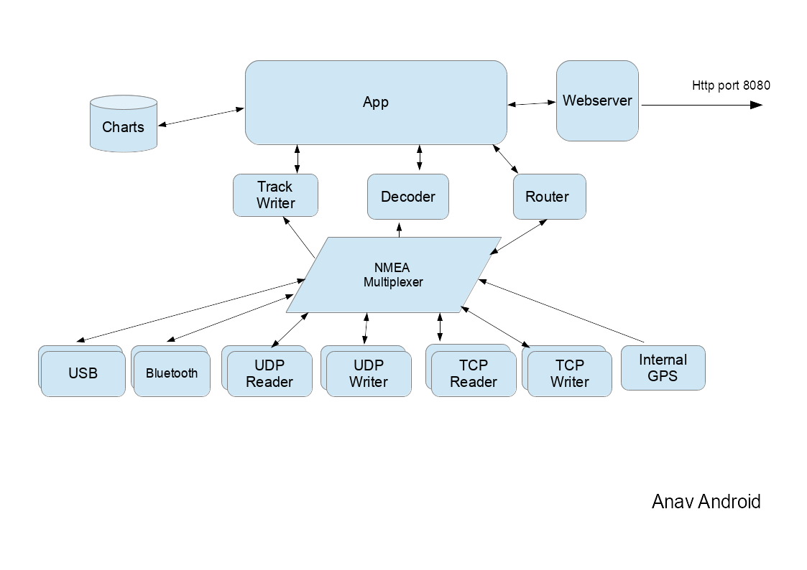
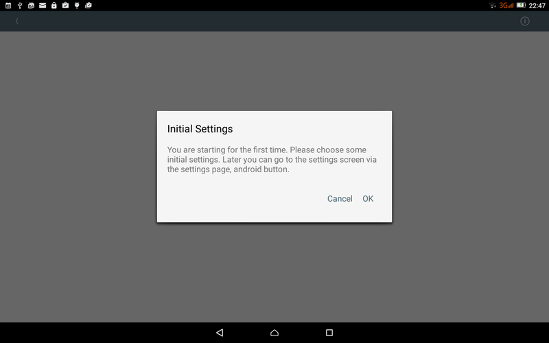
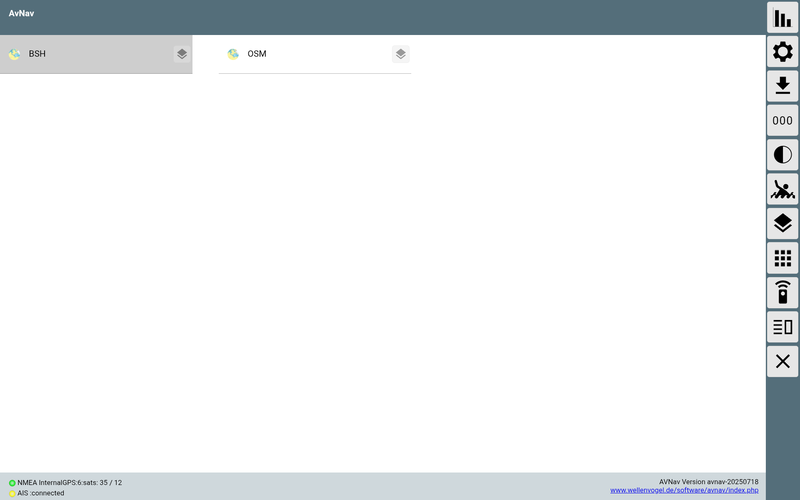
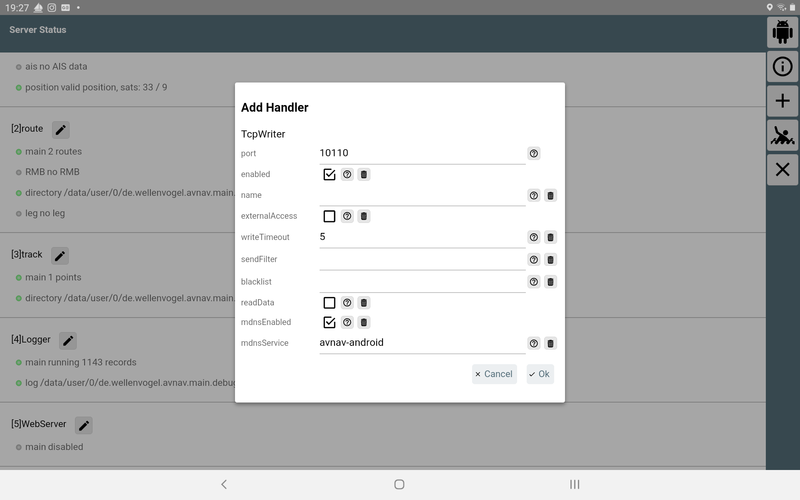
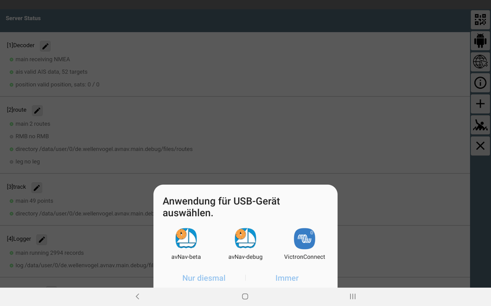

Bei der Aktivierung des Web Servers muss zunächst "externalAccess" aktiviert werden. Mit "mdnsEnabled wird dafür gesorgt, dass sich eine Bonjour-fähige App (z.B. BonjourBrowser)sich mit dem Server der App verbinden kann.
Nachdem die Navigations-App für die Nutzung mit dem Raspberry Pi bereits einige Jahre erfolgreich im Einsatz ist, gibt es jetzt auch eine Version, die direkt (ohne einen Raspberry) Geräten mit Android läuft, z.B Tablets oder Handys. Sie erfordert Android ab 4.4 (KitKat).
Die aktuellste Version kann man unter Downloads
herunterladen oder im AppStore.
Ältere Versionen oder "daily builds" findet man über die Installationsbeschreibung.
Sie verpackt im Wesentlichen die Web-App (siehe Beschreibung) in eine Android Applikation - siehe dort auch die Verfahren zum Erzeugen/Konvertieren der Karten.
(neu ab 20210424)
Die App besteht intern aus mehreren Funktionsblöcken .
Der NMEA Multiplexer verarbeitet NMEA0183 Daten von den verschiedenen Quellen. Neben dem internen Geräte-GPS können die Daten von Quellen wie TCP Verbindungen, UDP Ports, USB Geräten oder Bluetooth Verbindungen kommen. Die meisten Quellen unterstützen das gleichzeitige Senden und Empfangen von Daten. Es können jeweils mehrere Quellen des gleichen Typs konfiguriert werden (in der App-Konfiguration existiert für jede Quelle ein sogenannter "Handler").
| Name in der App | Beschreibung |
| InternalGPS | Die Daten des internen GPS werden als NMEA-Daten eingespeist. |
| TcpReader | Eine TCP-Verbindung zu einem externen System. AvNav ist dabei ein
TCP-Client und öffnet die Verbindung. Als Adresse kann sowohl eine IP-Adresse, als auch ein Hostname angegeben werden. Auch ein mDNS-Name wie avnav.local kann benutzt werden. |
| TcpWriter | AvNav ermöglicht es einer anderen App oder einem anderen System, sich zu verbinden und Daten zu empfangen. AvNav ist hier der TCP-Server. |
| UdpReader | AvNav empfängt UDP-Daten auf dem konfigurierten Port. |
| UdpWriter | AvNav sendet UDP-Daten zur konfigurierten Adresse und zum konfigurierten Port. |
| UsbConnection | Daten können über einen angeschlossenen USB-Seriell-Wandler gesendet umd empfangen werden. Das erfordert allerdings USB-OTG-Funktionalität auf dem Gerät. |
| Bluetooth | Eine Verbindung zu einem Bluetooth-Gerät. Das Pairing des Gerätes muss vorher außerhalb von AvNav erfolgen. |
| NMEA0183 service | Eine Verbindung zu einem System, das seine NMEA0183 Daten als TCP-Service über mDNS (Bonjour/Avahi)
bereit stellt. AvNav öffnet eine TCP-Verbindung zu einem solchen Gerät. |
Der NMEA-Multiplexer kann sehr flexibel konfiguriert werden. Zu jeder Verbindung lassen sich Eingangs- und Ausgangsfilter festlegen.
Der Multiplexer reicht intern die Daten auch an die anderen Bereiche der App weiter. Der Dekoder bereitet die Daten dann für die Nutzung innerhalb der App auf.
Die eigentliche App mit der Kartendarstellung und den Anzeigen kann einerseits ganz normal als Android-App genutzt werden. Parallel dazu kann der integrierte Webserver aktiviert werden. Das ermöglicht den Zugriff mit einem Browser von weiteren Geräten aus, so wie auch in der Server-Variante.
Der Anzeige-Teil der App kann beendet werden, sodass der Multiplexer allein im Hintergrund weiter läuft. Damit kann AvNav auch genutzt werden, um NMEA-Daten für andere Android-Apps bereitzustellen. In AvNav konfiguriert man dazu einen TcpWriter, in den zugreifenden Apps verbindet man sich über die Adresse 127.0.0.1 und den vorher konfigurierten Port).
Die Karten werden im gemf- Format erwartet.Ab Version 20200325 auch als "mbtiles" oder "*.xml files". Sie können in 2 Verzeichnissen liegen:
Die Karten müssen auf das Gerät in eines der Verzeichnisse kopiert oder in der App hochgeladen werden . Zusätzlich sind einige Demo-Karten vorinstalliert, die allerdings eine Online-Verbindung erfordern.
Wenn das gewählte Arbeitsverzeichnis (Standard: interne-sd-Karte/avnav) noch nicht existiert, wird es beim ersten Start angelegt.
Die Track-Daten und Log-Dateien werden in das Verzeichnis "tracks" unterhalb des Arbeitsverzeichnisses geschrieben.
Im Unterverzeichnis "routes" werden die Routen im "gpx"-Format gespeichert. Routen und Tracks können aus der App über die Download-Funktion an andere Apps weitergegeben werden (siehe auch die Beschreibung der App). Um sie in andere Verzeichnisse zu speichern oder Routen aus anderen Verzeichnissen zu laden (Upload-Funktion), sollte sinnvollerweise ein Dateimanager auf dem Android-Gerät installiert sein.
Nach dem erstmaligen Start der App befindet man sich auf einer Einführungsseite:
Die "Settings"-Seite kann über den "OK"-Button (oben rechts) oder über den "Zurück"-Button verlassen werden. Man erreicht dadurch die Hauptseite der App.
(neu ab 20210424).
Die App ermöglicht es, das man sich mit einem Browser von anderen Geräten
verbinden kann. Dazu muss in der App der Web-Server aktiviert werden (Status/Server
Seite  ).
).
Bei der Aktivierung des Web Servers muss zunächst "externalAccess" aktiviert
werden. Mit "mdnsEnabled wird dafür gesorgt, dass sich eine Bonjour-fähige App
(z.B. BonjourBrowser)sich
mit dem Server der App verbinden kann.
In älteren Versionen hat die App dafür 2 Modi genutzt.
Der NMEA-Multiplexer und auch der Web Server von AvNav können ohne Anzeige nur im Hintergrund laufen. Das kann genuzt werden, wenn die Anzeige für Benutzer auf einem anderen Gerät erfolgen soll - oder wenn eine andere App für die Navigation genutzt wird und nur der Multiplexer von AvNav benötigt wird.
Dazu wird nach dem Start auf der Hauptseite über  der Beenden-Dialog aufgerufen und dort
"BACKGROUND" ausgewählt.
der Beenden-Dialog aufgerufen und dort
"BACKGROUND" ausgewählt.
Über die Benachrichtigung (in der Android-Nachrichtenzeile) kann die App wieder in den Vordergrund geholt - oder direkt beendet werden.
Die Einstellungen gliedern sich in zwei Teile:
Die Android-Einstellungen erreicht man über den  Button auf der Einstellungsseite
bzw. der Server/Status Seite.
Button auf der Einstellungsseite
bzw. der Server/Status Seite.
| Name | Bedeutung | Default |
| working directory | das Arbeitsverzeichnis (mit den Unterverzeichnissen charts,tracks, routes) | /storage/sdcard/avnav |
| additional charts directory | ein zusätzliches Kartenverzeichnis, das sinnvollerweise auf einer externen SD-Karte angelegt werden sollte | /storage/sdcard/avnav/charts |
| show demo charts | Anzeige der Demo-Karten. Das erfordert eine aktive Internetverbindung) | ein |
| Alarm-Sounds | Hier können die durch den Server erzeugten Alarm-Sounds abgeschaltet werden. Im Browser müssen diese ggf. zusätzlich abgeschaltet werden. | |
| Hide System Bars | Verbergen der Android Kopf- und Fusszeile | |
| reset to defaults | Rücksetzen der Multiplexer-Einstellungen auf Default-Werte |
| Name | Bedeutung | Default |
| Sound for XXX alarm | Hier kann der Ton für die verschiedenen Alarme gewählt werden | |
| reset to defaults | Rücksetzen der Sound-Einstellungen auf Defaults |
(neu ab 20210424)
Die Einstellungen für den Multiplexer sind auf der Status/Server
Seite  verfügbar.
Für jede Funktion, z.B. für jede Quelle im Multiplexer, ist ein
sogenannter "Handler" vorhanden, der hier konfiguriert werden kann.
verfügbar.
Für jede Funktion, z.B. für jede Quelle im Multiplexer, ist ein
sogenannter "Handler" vorhanden, der hier konfiguriert werden kann.
Weitere Quellen können über den  Button hinzugefügt werden. Es werden dann die
Handler angeboten, die möglich sind, z.B. wird "UsbConnection" nur angezeigt, wenn auch ein USB-Gerät angeschlossen ist.
Button hinzugefügt werden. Es werden dann die
Handler angeboten, die möglich sind, z.B. wird "UsbConnection" nur angezeigt, wenn auch ein USB-Gerät angeschlossen ist.
Neben den angezeigten Handlern in der Statusübersicht existiert im
Normalfall ein  Button,
mit dem man den Handler bearbeiten kann.
Button,
mit dem man den Handler bearbeiten kann.
Die im Bearbeitungs-Dialog angezeigten Parameter haben meist einen  Button, über den eine Hilfe angezeigt wird. Mit dem Button
Button, über den eine Hilfe angezeigt wird. Mit dem Button  kann
der jeweilige Parameter auf seinen Default-Wert zurückgesetzt werden.
kann
der jeweilige Parameter auf seinen Default-Wert zurückgesetzt werden.
Einige Parameter tauchen bei mehreren Handlern auf:
| Name | Beschreibung | default |
| enabled | aktviert/deaktiviert diesen Handler | je nach Handler |
| name | Name für den Handler. Dieser kann in Blacklists verwendet werden. | leer |
| port | TCP- oder UDP-Port | |
| filter/readerFilter/ sendFilter | Das ist ein NMEA-Filter. Hier kann definiert werden, welche NMEA-Daten
durchgelassen werden sollen. Mehrere Filter werden durch ein Komma (,) getrennt.
Für Datensätze, die mit dem Dollarzeichen ($) beginnen, werden die nächsten beiden
Zeichen ignoriert (die Talker-Id). Ein Filter für alle RMC-Sätze
sieht z.B. so aus: $RMC Ausschließlich für alle AIS-Daten: ! Alle RMC- und RMB-Sätze: $RMC,$RMB Falls der Filter negiert werden soll, muss ein ^ dem Ausdruck vorangestellt werden. ^$RMB,^$APB |
leer |
| blacklist | eine durch Kommas (,) getrennte Liste von Namen. NMEA Daten von diesen Quellen werden nicht ausgesendet. |
Die vorhandenen "Handler" und ihre Parameter. Es werden nur die spezifischen Parameter beschrieben.
| Parameter | Beschreibung | default |
| ownMMSI | eigene MMSi, diese wird in der AIS-Anzeige ausgeblendet | leer |
| posAge | erlaubtes Alter für die GPS-Position (in sec), nach dieser Zeit wird der Eintrag gelöscht, wenn keine neuen GPS-Daten empfangen wurden | 10 |
| nmeaAge | erlaubtes Alter für NMEA-Daten (in sec), die keine Positionsdaten enthalten | 600 |
| aisAge | erlaubtes Alter für AIS-Daten | 1200 |
| readTimeout | Timeout in s für die Anzeige ob valide NMEA Daten empfangen werden | 10 |
| Parameter | Beschreibung | default |
| computeRMB | erzeuge NMEA-RMB-Datensätze, wenn ein Routing aktiv ist. | an |
| Parameter | Beschreibung | default |
| interval | Intervall (in sec) für das Schreiben des Tracks als "gpx"-Datei. | 300 |
| distance | Minimaler Abstand (in m) bevor ein neuer Trackpunkt geschrieben wird | 25 |
| minTime | Minimale Zeit (in sec) bevor ein neuer Trackpunkt geschrieben wird | 10 |
| length | Länge des angezeigten Tracks in Stunden (h). | 25 |
NMEA-Logger
| Parameter | Beschreibung | default |
| port | der TCP-Port, auf dem der Server Verbindungen annimmt. | 8080 |
| external | Wenn aktiv, dann können sich auch andere Geräte verbinden (sonst
nur auf dem eigenen Gerät). Hinweis: Dieser Parameter sollte mit Vorsicht und nur in vetrauenswürdigen Netzen aktiviert werden. Innerhalb der App gibt es keinen weiteren Schutz! |
aus |
| mdnsEnabled | macht den Service per "mDNS" bekannt. | an |
| mdnsService | Der Name unter dem die App per "mDNS" erreichbar ist. | avnav-android |
Das GPS des Gerätes.
Der Handler für die Auflösung und das Bekanntmachen von "mDNS" (Bonjour/Avahi) Services.
| Parameter | Beschreibung | default |
| ipAddress | Die IP-Adresse oder der Hostname für den Server, der kontaktiert werden soll. Das kann auch ein mDNS Name wie z.B. avnav.local sein. | --- |
| port | Der Ip-Port, zu dem eine Verbindung aufgebaut werden soll. | --- |
| sendOut | Wenn aktiviert, werden auch NMEA-Daten gesendet. Ansonsten wird nur emfangen. | aus |
| readTimeout | Markiere die Verbindung als inaktiv, wenn keine Daten nach der eingestellten Zeit (sec) eingegangen sind. | 10 |
| writeTimeout | Schliesse die Verbindung, wenn ein NMEA-Datensatz nicht innerhalb der eingestellten Zeit (sec) geschrieben werden konnte. | 5 |
| connectTimeout | Timeout für den Verbindungsaufbau (in sec, 0 = System-default) | 0 |
| closeOnTimeout | Schliesse die Verbindung und öffne sie erneut, wenn das readTimeout erreicht wird. | an |
Ein TCPWriter stellt die NMEA-Daten für andere Anwendungen bereit.
| Parameter | Beschreibung | default |
| port | Der Port, auf dem der Server Verbindungen annimmt | --- |
| externalAccess | Wenn aktiv, können auch andere Geräte sich verbinden. Andernfalls können sich nur Apps auf dem selben Gerät verbinden. | aus |
| writeTimeout | Schliesse die Verbindung, wenn ein NMEA-Datensatz nicht innerhalb der eingestellten Zeit (sec) geschrieben werden konnte. | 5 |
| readData | Wenn aktiv, empfängt AvNav auch NMEA-Daten über eine aufgebaute Verbindung | aus |
| mdnsEnabled | mache den Service per mDNS im Netz bekannt (type: _nmea-0183._tcp) | aus |
| mdnsService | Der Name, unter dem dieser Server per mDNS erreichbar ist |
Ein UDP-Reader empfängt Daten von anderen Apps/Systemen.
| Parameter | Beschreibung | default |
| port | der UDP-Port, auf dem Daten empfangen werden | --- |
| externalAccess | wenn aktiv, können Daten von anderen Geräten empfangen werden, sonst nur innerhalb des selben Gerätes. | aus |
| readTimeout | zeige die Verbindung als inaktiv, wenn für die eingestellte Zeit (sec) keine Daten empfangen wurden. | 10 |
Ein UDP-Writer sendet NMEA-Daten per UDP an eine andere App.
| Parameter | Beschreibung | default |
| ipaddress | die IP-Adresse oder der Hostname des Ziel-Computers. Es kann auch ein mDNS-Name wie "avnav.local" genutzt werden. | --- |
| port | Der Ziel-Port , an den Daten gesendet werden sollen | --- |
| broadcast | Sende die Daten als Broadcast, die IP-Adresse muss dann eine gültige Broadcast-Adresse sein. | aus |
Ein NMEA0183-Service arbeitet im Wesentlichen wie ein TcpReader.
Allerdings werden hier nicht Zieladresse und Port vorgegeben. Stattdessen
wird der Name eines (mDNS) Services (type: _nmea-0183._tcp) aus einer
Liste der verfügbaren Services gewählt. Falls z.B. im Netz ein SignalK-Server oder ein AvNav-Server (> 20210415) vorhanden sind, geben diese
ihre NMEA-Ausgänge auf diese Weise im Netzwerk bekannt.
Der Vorteil ist, dass auch bei Wechsel des Netzwerkes der Zugriff im
Normalfall wieder funktionieren wird und Verbindungen so automatisch wieder aufgebaut
werden können.
| Parameter | Beschreibung | default |
| service | der Name des Services (Auswahl aus der Liste der gefundenen) | --- |
| sendOut | sende NMEA-Daten auf dieser Verbindung | |
| readTimeout | Zeige die Verbindung inaktiv, wenn keine Daten nach der eingestellten Zeit (sec) aufgelaufen sind. | 10 |
| writeTimeout | Schliesse die Verbidung, wenn ein Satz nicht innerhalb der eingestellten Zeit (sec) geschrieben werden konnte | 5 |
| connectTimeout | Timeout für den Verbindungsaufbau (in sec, 0 = System-default) | 0 |
| closeOnTimeout | Schliesse die Verbindung und öffne sie erneut, wenn das readTimeout erreicht wird. | an |
AvNav wird aktiv, wenn ein USB-Gerät angeschlossen wird. Es ist daher sinnvoll, zunächst AvNav zu starten und danach das USB-Gerät anzuschließen. Das Gerät kann dann direkt so konfiguriert werden, dass AvNav immer auf dieses Gerät zugreifen darf. AvNav startet dann sofort den Dialog zur Konfiguration des Gerätes.

| Parameter | Beschreibung | default |
| device | Das angeschlossene USB-Gerät, genauer: der Anschluss des Gerätes, Auswahl aus einer Liste | --- |
| baud rate | Die Baudrate | 9600 |
| flowControl | none|xon/xoff|rts/cts - Auswahl der Flusssteuerung (muss vom Adapter unterstützt werden) | none |
| sendOut | sende NMEA-Daten auf dieser Verbindung | aus |
| readTimeout | Markiere die Verbindung als inaktiv, wenn keine Daten nach der eingestellten Zeit (sec) aufgelaufen sind. | 10 |
| Parameter | Beschreibung | default |
| device | Das Bluetooth-Gerät. Bei der Einrichtung werden alle Geräte angeboten, die bereits bekannt sind, erst danach wird versucht, das Gerät zu erreichen. | --- |
| sendOut | sende NMEA-Daten auf dieser Verbindung | aus |
| readTimeout | Markiere die Verbindung als inaktiv, wenn keine Daten nach der eingestellten Zeit (sec) aufgelaufen sind. | 10 |